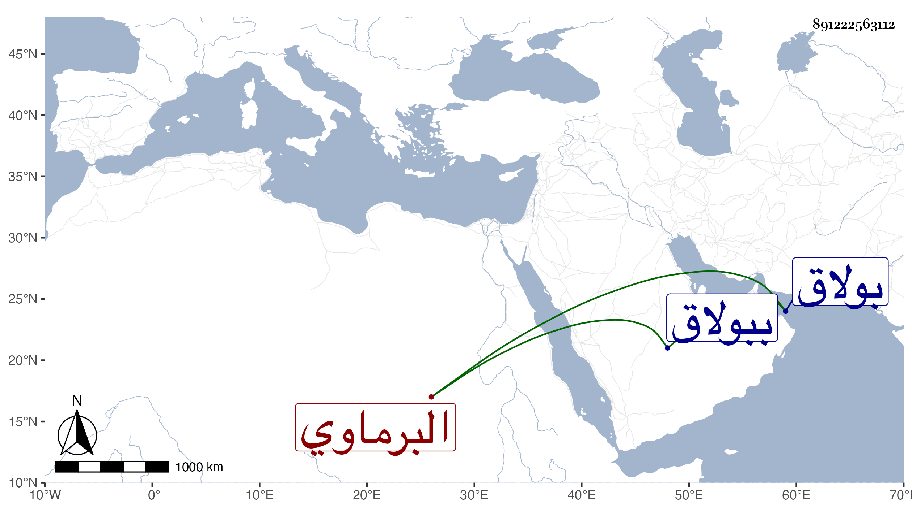

0902Sakhawi.DawLamic.ITO20230111-ara1.EIS1600.891222563112
Biography ID: 891222563112
435
محمد بن محمد بن عمر بن أحمد التقي بن البدر البرماوي الأصل نزيل الظاهرية القديمة ثم بولاق والماضي أبوه . ممن حفظ القرآن وغيره وتكسب بالشهادة وخدم تمر الحاجب وقتا وكذا لازم تمراز كثيرا ولم يحصل على طائل ، واستقر في جهات أبيه بعده ومنها إمامة الجامع الزيني ببولاق ، وحج في الرجبية وسافر لغير ذلك وسمع مني مع والده قليلا بل سمعا بقراءتي ختم البخاري وغيره على أم هانئ الهورينية ومن شاركها يومئذ ، وتزوج ابنة نور الدين البرقي بعد الشهاب أحمد بن إسماعيل الحريري الحنفي ، وهو حسن الهيئة متأدب ولكنه رسم عليه حين التعرض للمتكلمين على الجهات . وتناقص حاله جدا .
